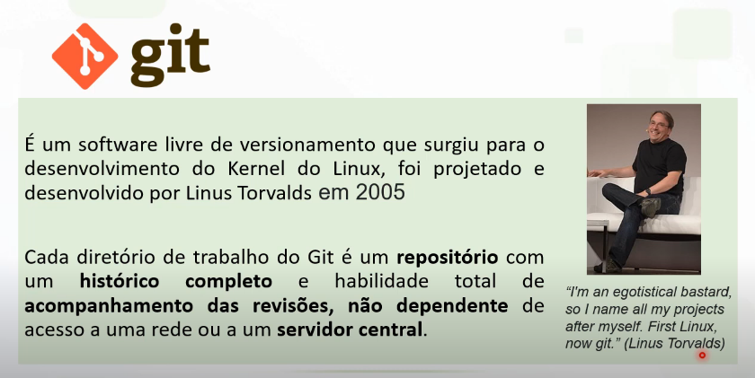

Realizar o controle de versões de um código ou documento.
É possivel gerenciar as versões de um código ou documento realizadas por um desenvolvedor ou equipe de
desenvolvedores.
SEUS TIPOS:
CENTRALIZADO:
Possui um repositorio central em um servidor com controle de verões.
Dependente do servidor
EX: Sofware Subrsion
DISTRIBUÍDO:
Possui um repositório local com controle de versôes.Atualização no repositorio central.
Independente do servidor
EX: Sofware Mercurial, Git
GitHub
Plataforma de hospedagem de código-fonte e arquivos com controle de versão.
MAS O QUE É GIT?

COMANDOS GIT:
Commit = Torna permanente um conjunto de alteraçôes em um repositório.
Push = Alterações para o servidor no repositório remoto.
Fetch = Verifica se seu local está em sincronia com o remoto.
Pull = sincroniza o repositorio local com o remoto atualizando as versões.